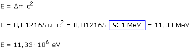

Masa primer miembro:
2·3.016049 u
= 6.032098 u
Masa segundo miembro:
4.002603 u + 2· 1.008665 u
= 6.019933 u
Diferencia:
= 0.012165 u
El segundo miembro tiene 0.012165 u menos de masa que el primer miembro. Esta masa que falta se ha convertido en energía cinética de los núclidos formados (Además se lleva más energía el que menos masa tiene, es decir el neutrón)
